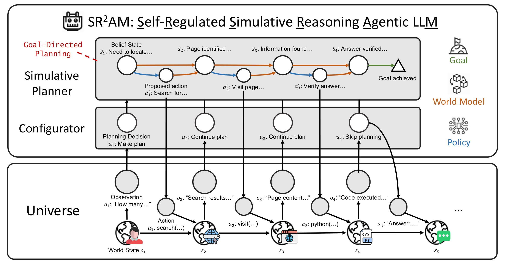
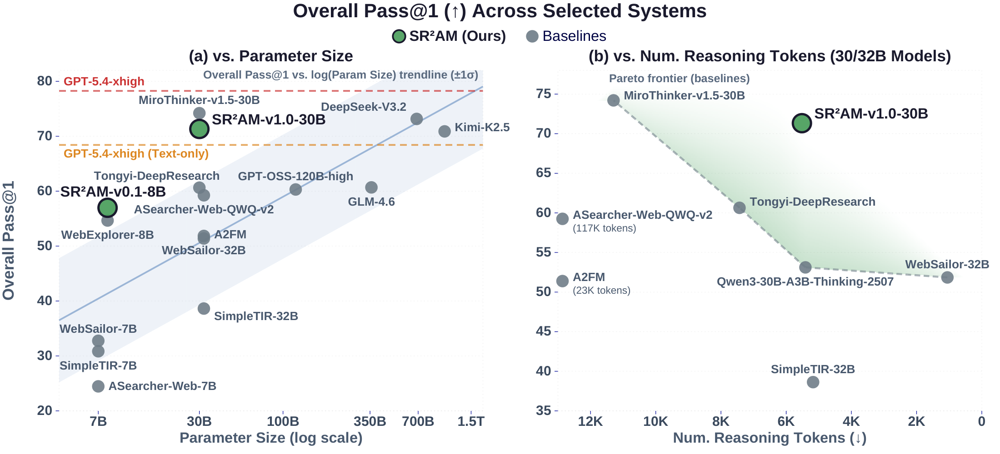
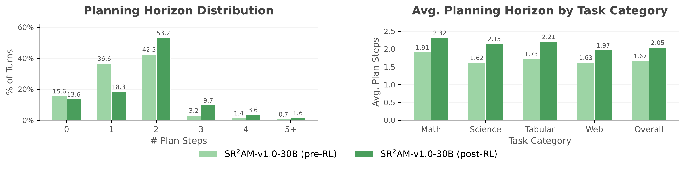

* Equal contribution
1 Institute of Foundation Models 2 Carnegie Mellon University
We argue that efficient agentic reasoning benefits from decomposing deliberation into three interacting systems: reactive execution (System I) for fine-grained reasoning and direct action; simulative reasoning (System II) that predicts consequences of proposed actions through a world model, providing a unified planning mechanism across diverse tasks; and self-regulation (System III) that decides when and how deeply to plan through a learned configurator.
SR2AM (Self-Regulated Simulative Reasoning Agentic LLM) is our instantiation of this decomposition: the configurator and simulative planner are realized as distinct stages within an LLM's chain-of-thought reasoning, with the LLM itself serving as the world model in language space. By separating self-regulation, planning, and execution while preserving the expressiveness of free-form reasoning, SR2AM learns to plan further ahead rather than simply reason more, achieving competitive task performance with substantially fewer reasoning tokens.

SR2AM at each turn: the configurator (System III) decides whether to make a plan, continue an existing one, or skip planning; when invoked, the simulative planner (System II) generates structured proposed actions and predicted future states using the LLM as a world model; the actor (System I) then executes via free-form reasoning and tool use.
How should an agent decide when and how to plan? A dominant approach builds the agent as a reactive policy with adaptive computation (e.g., chain-of-thought reasoning), trained end-to-end with the expectation that planning will emerge implicitly from sufficient data and compute. Without control over the presence, structure, or horizon of planning, however, these systems typically increase reasoning length dramatically during training, leading to inefficient token consumption that does not reliably translate to accuracy gains.
We argue that efficient agentic reasoning benefits from a decomposition of decision-making into three interacting systems: simulative reasoning (System II) that grounds deliberation in future-state prediction using a world model, rather than unconstrained chain-of-thought; self-regulation (System III) that decides when and how deeply the agent plans at each turn through a learned configurator; and reactive execution (System I) that handles fine-grained reasoning and action. Simulative reasoning provides a unified planning structure applicable across diverse reasoning tasks without per-domain engineering, while self-regulation ensures that the simulative planner is invoked only when the situation warrants it, avoiding both the inefficiency of unregulated deliberation and the rigidity of always-on planning.
To test this, we develop SR2AM (Self-Regulated Simulative Reasoning Agentic LLM), which realizes the configurator and simulative planning as distinct stages within an LLM's chain-of-thought reasoning, with the LLM itself serving as the world model in language space. We explore two instantiations: recording decisions from a multi-module prompted system (v0.1) and reconstructing structured plans from the traces of pretrained reasoning LLMs (v1.0). Both are trained via supervised learning followed by reinforcement learning (RL).
Across mathematical reasoning, scientific problem-solving, tabular data analysis, and web information seeking, SR2AM-v0.1-8B and SR2AM-v1.0-30B achieve overall Pass@1 competitive with systems at 120–355B and 685B–1T parameters, respectively, while SR2AM-v1.0-30B consumes 25.8–95.3% fewer reasoning tokens than competitive agentic LLMs of similar scale. Analysis reveals that RL increases average planning horizon by 22.8% while planning frequency grows only 2.0%, indicating that the model learns to plan further ahead rather than more often.
The agent interacts with its environment over a sequence of turns, maintaining a belief state ŝt and choosing an action at at each step. Rather than treating the action distribution as one black-box chain-of-thought, we factor it into three multiplicative stages: configurator, simulative planner, and actor, which decide, in order, whether to plan, what to plan, and how to act:
In SR2AM, all three components share a single LLM and are realized as distinct stages within its chain-of-thought, with the LLM itself serving as the world model in language space.
System III
Self-Regulation
A learned configurator κ decides, at every turn, whether to make a new plan, continue an existing one, or skip planning — controlling both when and how deeply to plan.
pκ(ut | ŝt)
System II
Simulative Reasoning
When planning is invoked, the simulative planner generates a structured plan ct: proposed actions and predicted future states under the LLM-as-world-model, providing a unified planning structure across tasks.
pπf(ct | ŝt, ut)
System I
Reactive Execution
The actor α emits the next action via free-form reasoning, conditioned on the current state and any active plan — capturing fine-grained execution patterns that resist structured encoding.
pα(at | ŝt, ct)
This decomposition situates several prior paradigms as partial instances: adaptive effort controls only the amount of unstructured thought; coarse mode-routing makes a single routing decision per task; multi-agent distillation internalizes rule-based capability routing but lacks free-form reasoning. SR2AM combines per-turn self-regulation, simulative planning, and free-form execution within a single LLM.
Builds trajectories that interleave configurator decisions, simulative plans, and free-form reasoning, teaching the model when to plan, how deep to plan, and how to act under each decision.
v0.1 — Multi-Module Inference
The configurator, simulative planner, and other reasoning modules are run as separate prompted LLMs. Trajectories are filtered for correctness and minimum reasoning complexity before SFT.
v1.0 — Plan Reconstruction
An annotator LLM reconstructs configurator decisions and simulative plans from the thinking-acting trajectories of a pretrained reasoning LLM.
After SFT, the policy is refined for task success, so the configurator learns to invoke deeper planning when it helps rather than to plan more often.
Reward Function
Piecewise reward combining answer correctness, structural compliance with the self-regulated simulative reasoning format, and final answer format.
Policy Optimization
Group Relative Policy Optimization (GRPO) with asymmetric clipping and on-policy updates. For 30B+ models, truncated trajectories are filtered out to prevent format collapse.
Performance
SR2AM-v0.1-8B achieves an overall Pass@1 of 57.0, competitive with some unregulated agentic LLMs at 30–32B and pretrained LLMs with tools at 120–355B. SR2AM-v1.0-30B reaches 71.3, comparable to DeepSeek-V3.2 (685B, 73.2) and Kimi-K2.5 (1.0T, 70.9) in the same tool harness.
Efficiency
Among strong 30–32B agentic LLMs, SR2AM-v1.0-30B consumes 25.8–95.3% fewer reasoning tokens while achieving competitive or better accuracy. Compared to MiroThinker-v1.5-30B, it achieves competitive Pass@1 while consuming 51.2% fewer reasoning tokens (5,518 vs. 11,295).

Overall Pass@1 vs. parameter size (left) and vs. average reasoning tokens for 30/32B models (right). Both SR2AM models sit above the scaling trend and on the token-efficiency frontier of comparable agentic LLMs.
Training Analysis
After RL, the average planning horizon grows by 22.8% while planning frequency rises only 2.0%, indicating that the configurator learns to invoke deeper planning when it chooses to plan, rather than planning more often. The horizon increase holds across all four task categories, from +20.9% in web (where environmental uncertainty limits feasible lookahead) to +32.7% in science.

Planning horizon distribution and planning frequency before (light) and after (dark) RL, aggregated and per task category.
If you find this work useful, please cite:
@misc{deng2026sr2am,
title = {Efficient Agentic Reasoning Through Self-Regulated Simulative Planning},
author = {Deng, Mingkai and Hou, Jinyu and Neves, Lara and
Pimpalkhute, Varad and Killian, Taylor W. and
Liu, Zhengzhong and Xing, Eric P.},
journal = {arXiv preprint arXiv:xxxxxx},
year = {2026},
doi = {10.48550/arXiv.xxxxxx},
url = {https://arxiv.org/abs/xxxxxx}
}